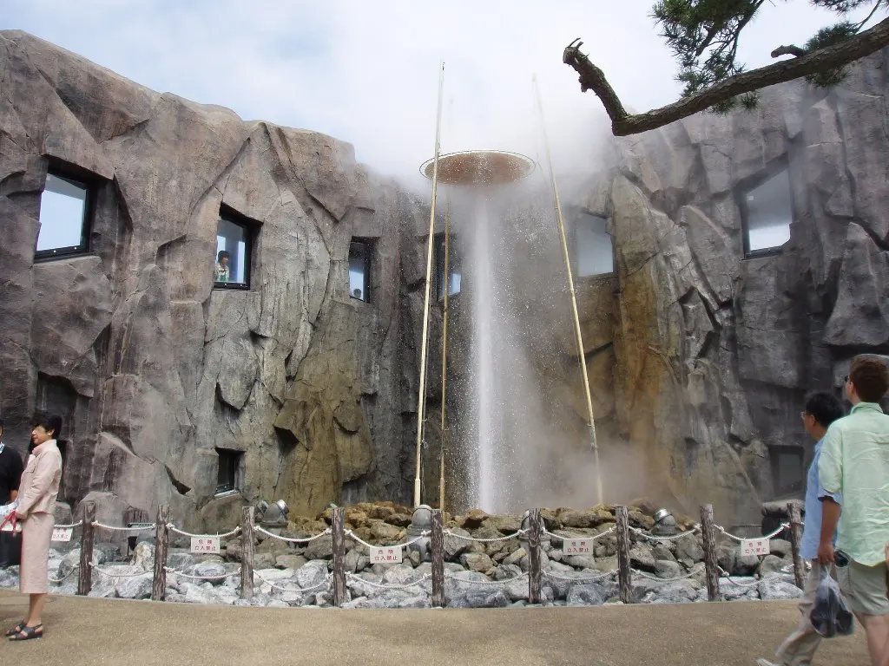
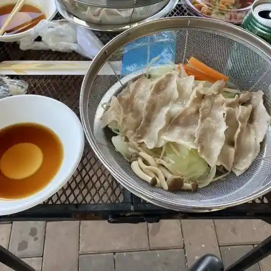
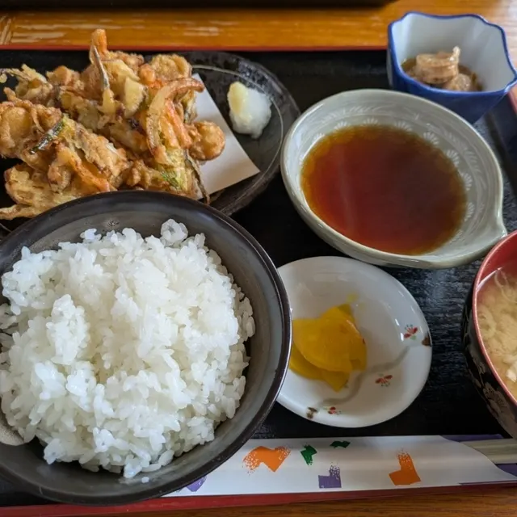
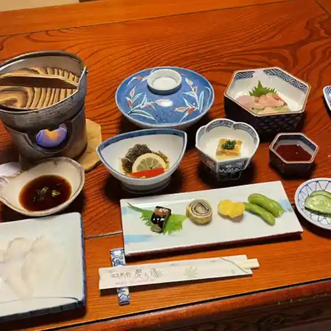
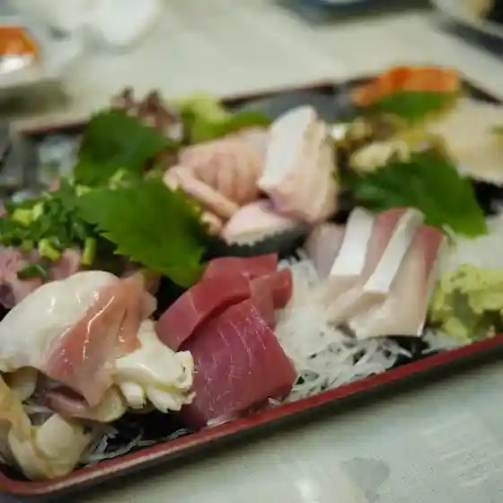
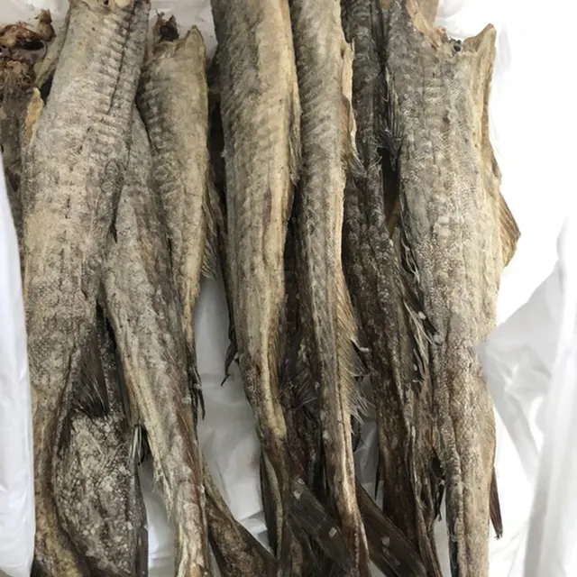
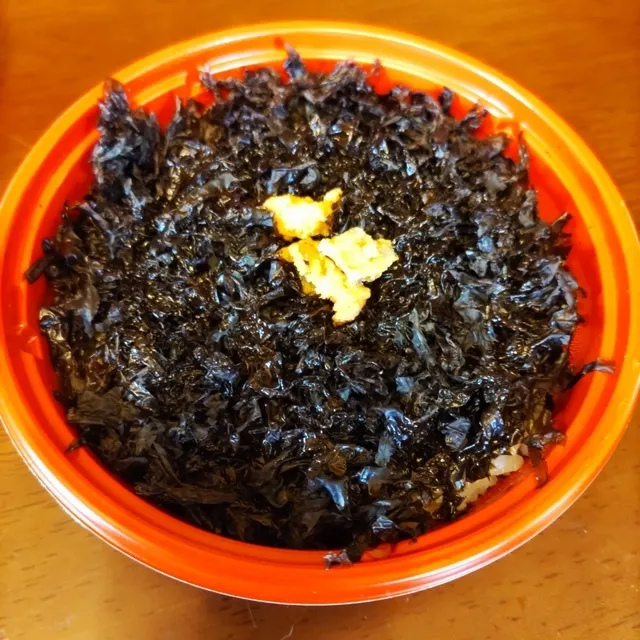
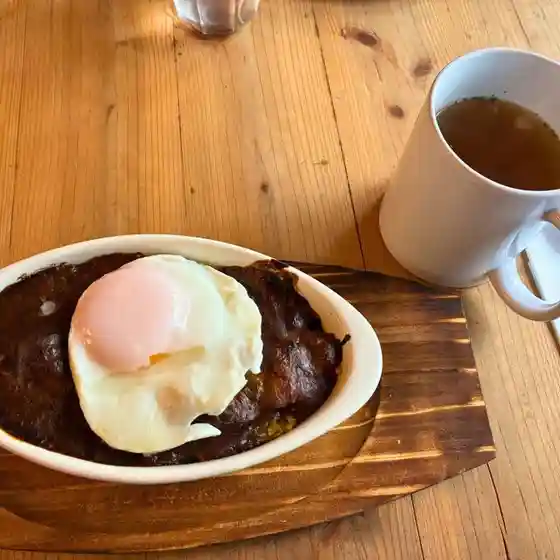

Shikabe
Shikabe · Hokkaido
Shikabe
Highlighted on the Hokkaido map.

Stay
リブマックスリゾート函館 鹿部温泉
Ribumakkusurizooto Hakodate Shikabe Onsen
Dining
道の駅 しかべ間歇泉公園

Michi No Eki Shikabe Kanketsu Izumi Kouen
ゆとり

Yutori
鹿の湯

Shika No Yu
大寿し

Dai Hisashi Shi
イリエ船橋商店直売所

Irie Funabashi Shouten Chokubai Tokoro
一印高田水産

Ichi In Takada Suisan
あらびき

Arabiki
CAFE GRANDPA’S DREAM

Cafe Grandpa ’ S Dream
浜のかあさん食堂
Hama Nokaasan Shokudou
小板商店
Shouban Shouten
吉の湯
Kichi No Yu
大沼国際カントリークラブ レストラン
Oonuma Kokusai Kantoriikurabu Resutoran
木もれ日
Ki More Nichi
シーフードショップドウナン
Shiifuudoshoppudounan
セイコーマート 鹿部店
Seikoomaato Shikabe Mise
自然の森 夢紀行
Shizen No Mori Yumekikou
道場水産
Doujou Suisan
Cafe ぽっぽ
Cafe Poppo
casa del gatto
Casa Del Gatto
まいど
Maido
カールス君の家
Kaarusu Kun No Ie
喫茶 moi
Kissa Moi
湯けむり処しかべ焼き
Yu Kemuri Shoshi Kabe Yaki
鹿部・食とうまいもの館
Shikabe Kutto Umaimono Kan